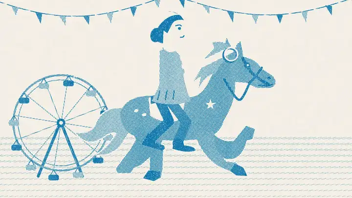
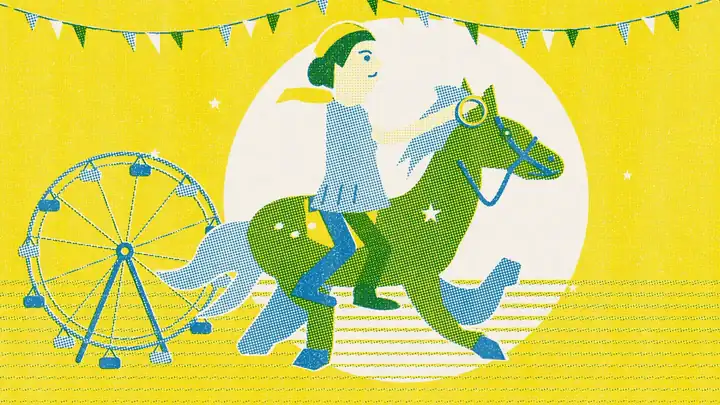
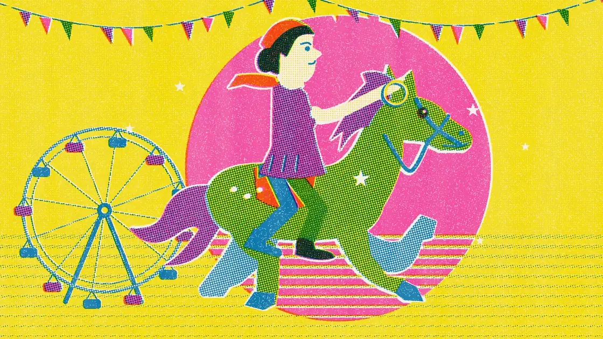

Risograph Print
MidwayPress.
A brass ring. A desk bell. Two little films from the same three ink drums.
▶Watch the double bill


Scroll to pull the print
A double feature
Picture show
From the soundtrack
Listen to
the second bell.
The sparrow rings once. Who rings a second time? Lift the music out and listen at the desk.
Printer’s notes
In the margins
Blue goes through first. Yellow over blue makes the horse green. Fluorescent pink brings violet to the dress and mane. Each drum lands a little off register, leaving a second colour along the edges.
Making the films & credits
The broadside rearranges the horse, rider and Ferris wheel from One More Turn. Its three proofs come from the film’s separation renderer. Bell Hop has a separately drawn hotel, sparrow and night clerk. Each film has its own composed score and effects. English voices use Kokoro am_adam and bf_emma.